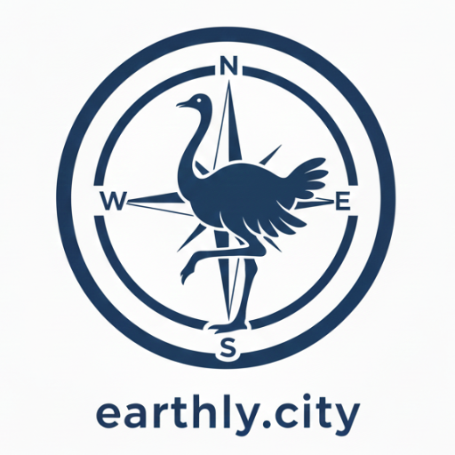

Untitled workspace
Looking
Focus
Build
12.4k
Sightings
A heron by the lake
LIVE
“Big grey heron, still 🐦”
@lea · 40m · fades 6d
Cherry blossom, peak now
“Whole avenue is pink”
@sam · 2h · fades 5d
Fox den entrance
“Two kits at dusk”
@ava · 5h · fades 4d
Street musician here
“Cello, sounds unreal”
@nils · 6h · fades 4d
8 shown
2 fading today
52.5163, 13.3777
zoom 13.2 · Volkspark
Assistant
map-aware
Which sightings fade today?
Two expire today — highlighted on the map and filtered in the panel:
Street musician
3h left
Pop-up stall
7h left
Ask about this map…
4 relays
EPSG:4326
z13.2
8 sightings · 4 beacons